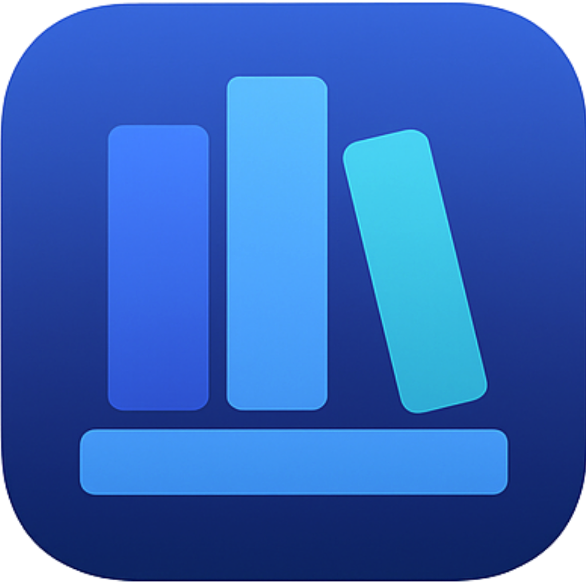

BrightShelf
Eine lokale, datenschutzfreundliche Alternative zu Adobe Bridge: BrightShelf hilft dabei, Bildbestände schnell zu sichten, zu sortieren und übersichtlich zu verwalten.
Projekt auf GitHub
Independent developer · Germany
Ich entwickle ruhige, nützliche Apps für Apple-Plattformen — sorgfältig gebaut, klar im Alltag und ohne unnötigen Ballast.
Ausgewählte Projekte02 ausgewählt
Eine lokale, datenschutzfreundliche Alternative zu Adobe Bridge: BrightShelf hilft dabei, Bildbestände schnell zu sichten, zu sortieren und übersichtlich zu verwalten.
Projekt auf GitHub
Wetter für echte Entscheidungen. Metevia zeigt Regen, Warnungen und Vorhersagen so klar, dass ein Blick für die Tagesplanung reicht.
Im App Store ansehen